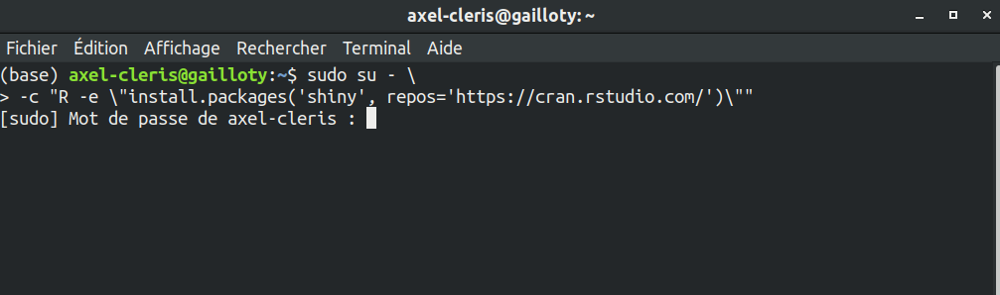
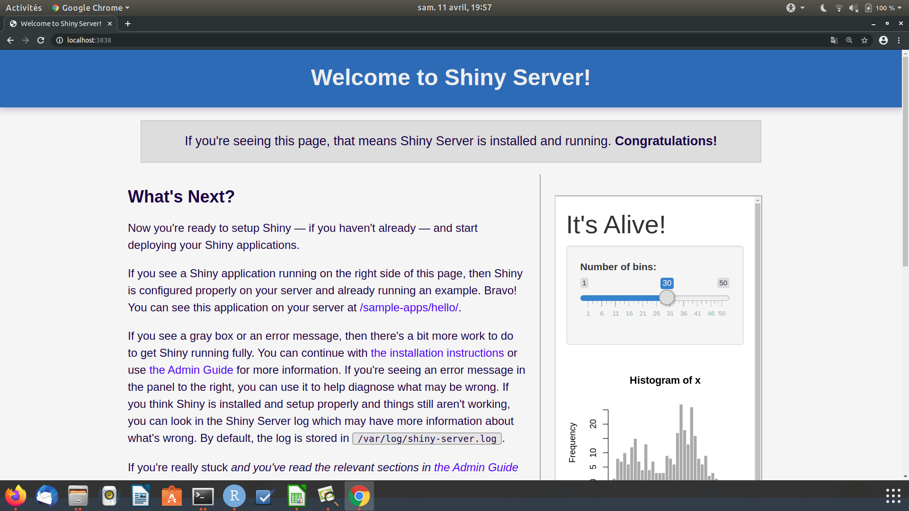
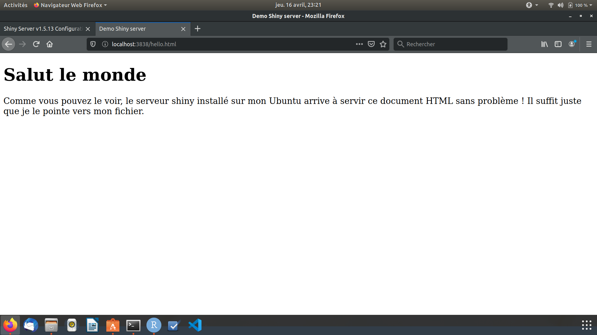

2 Choix de Linux, installation de shiny, shiny server
Un des points importants avec le langage R est qu’il est fonctionne sur tous les systèmes d’exploitations majeurs : Windows, Mac et Linux. Le même code qu’on écrit avec R sur Windows tourne sans problème sur Mac et Linux. 1
J’ai commencé à apprendre shiny sur Windows dans R Studio où j’écris le code et pour visualiser ce que je fais je clique sur le bouton Run App présent dans R Studio.
Pour ce présent projet j’ai choisi de développer sur Linux avec la distribution Ubuntu. Le code R que j’écris peut tourner sur toutes les plateformes. J’ai choisi Linux pour mettre en avant le programme Shiny Server développé par R Studio et qui ne marche que sur Linux. Shiny Server est un serveur installé sur Linux qui permet de déployer les application shiny sur le web.
Etant donné que je développe mes applications en local sur mon ordinateur je veux bien les tester sur tous les types de périphériques (smartphone, tablette, PS4 …) avant de les déployer sur Internet. Une fois que ces périphériques sont connectés au réseau local Shiny server peut servir l’application sur une adresse IP.
2.1 Installation de R et de Shiny Server
A la fin de ce tutoriel vous pourrez faire tourner un serveur shiny sur votre réseau local et accéder au serveur sur votre ordinateur ou tout autre appareil connecté au réseau.
Shiny Server peut être installé sur plusieurs distributions Linux (Debian, CentOS, openSUSE … ). Ici je détaille comment je l’ai installé sur mon PC qui tourne sous un Ubuntu Desktop 18.04 LTS. Les étapes sont présentées sur le site de R Studio.
2.1.1 Installer R sur Ubuntu 14 ou plus
Par défaut lorsqu’on exécute la commande suivante, c’est la version de R correspondant à la version du système d’exploitation Ubuntu qui est installée. La version Ubuntu 18.04 LTS va installer la dernière version de R disponible au moment de la sortie d’Ubuntu 18.04, ce qui fait qu’il y a un retard de 2 ans. Le serveur shiny marche bien avec les anciennes version de R, mais en deux ans beaucoup d’améliorations ont été apportées au langage, donc pourquoi s’en priver. Il serait bien d’installer la version la plus récente de R.
sudo apt-get install r-basePour installer la dernière version de R il faut tout d’abord ajouter le répertoire CRAN le plus récent au système d’exploitation Ubuntu. Cela permet d’installer la version la plus récente de R car autrement c’est la version (3.4) de R qui va être installée.
La commande suivante permet d’ajouter le répertoire CRAN à la version de Ubuntu.
sudo add-apt-repository 'deb https://cloud.r-project.org/bin/linux/ubuntu xenial-cran35/'
sudo apt-key adv --keyserver keyserver.ubuntu.com --recv-keys E298A3A825C0D65DFD57CBB651716619E084DAB9Ensuite exécuter les lignes de commandes suivantes :
Dans un premier temps on met à jour le gestionnaire de package APT puis on installe R.
sudo apt-get update
sudo apt-get upgrade
sudo apt-get install r-base-dev2.1.2 Installation du serveur Shiny
Shiny Server n’est pas un package R mais un programme à part entière qu’il faut installer sur un système Linux. Ce programme ne tourne que sous Linux comme la plupart des serveurs web. La procédure d’installation dépend de quelle distribution de Linux vous utilisez. Ici je détaille montre comment installer le serveur Shiny sur un système Debian/Ubuntu.
Si vous avez déjà sur votre PC Linux une version ancienne de R il est recommandé d’installer la version la plus récente pour éviter tout problème lié à la compatibilité.
Pour installer le serveur il faut d’abord installer Shiny et d’autres packages de façon globale sur le système d’exploitation.
Un package installé globalement est valable pour tous les utilisateurs de l’ordinateur.
Pour installer Shiny globalement sur le système, exécuter la commande suivante dasn votre terminal.
sudo su - \
-c "R -e \"install.packages('shiny', repos='https://cran.rstudio.com/')\""Dans bien des cas il vous faut aussi installer le package digest et/ou d’autres packages sur lesquels dépend votre application.
sudo su - \
-c "R -e \"install.packages(c('digest', 'tidyverse'), repos='https://cran.rstudio.com/')\""Il vous sera demandé d’entrer votre mot de passe pour donner la permission aux packages de s’installer globalement.

Par défaut lorsqu’on utilise R via le console ou via RStudio les packages sont installés premièrement dans le répertoire /home de l’utilisateur. Il existe également d’autres répertoires où les packages peuvent être installés.
Avec la fonction .libPaths() définie dans R vous pouvez regarder là où R installe les packages.
[1] "/home/axel-cleris/R/x86_64-pc-linux-gnu-library/3.6"
[2] "/usr/local/lib/R/site-library"
[3] "/usr/lib/R/site-library"
[4] "/usr/lib/R/library" Le premier chemin est le lieu par défaut où sera installé tous les packages. Pour nous ici nous avons décidé d’installer Shiny au niveau global, ce package sera donc installé dans un des dossiers usr/lib/.
Généralement pour gérer les répertoires dans lesquels les packages seront installés vous pouvez vous référer au fichier .Rprofile pour définir le comportement de R.
Après l’installation de R Shiny globalement on peut installer le serveur Shiny.
L’installation du serveur se fait avec Gdebi l’installateur de pacquet .deb.
L’installation se fait en deux étapes :
- Dans un premier temps on se place dans un sur quelque part dans notre répertoire (typiquement le Bureau) puis on télécharge le paquet
.debde Shiny Server avec wget.
Installer Gdebi avec la commande sudo apt-get install gdebi-core s’il n’est pas installé.
cd
sudo apt-get install gdebi-core
wget https://download3.rstudio.org/ubuntu-14.04/x86_64/shiny-server-1.5.13.944-amd64.deb- Puis on installe en tant qu’administrateur le paquet shiny-server.
sudo gdebi shiny-server-1.5.13.944-amd64.debUne fois que le serveur Shiny est correctement installé vous pouvez accéder au serveur au localhost:3838 ou http://127.1.1.0:3838 le port 3838 est défini par défaut dans le fichier de configuration.
Vous verrez cette page dans votre navigateur si vous entrez l’adresse localhost:3838 ou http://127.1.1.0:3838.

2.2 Administrer le serveur Shiny
Le fichier de configuration du serveur shiny se trouve à l’emplacement /etc/shiny-server/shiny-server.conf.
# Instruct Shiny Server to run applications as the user "axel-cleris"
run_as axel-cleris;
# Define a server that listens on port 3838
server {
listen 3838;
# Define a location at the base URL
location / {
# Host the directory of Shiny Apps stored in this directory
site_dir /srv/shiny-server;
# Log all Shiny output to files in this directory
log_dir /var/log/shiny-server;
# When a user visits the base URL rather than a particular application,
# an index of the applications available in this directory will be shown.
directory_index on;
}
}Nous allons passer en revue les points importants à noter dans ce fichier de configuration.
run_as axel_cleris;Le seul changement que j’ai fait jusque là dans ce fichier est de changer les deux premières lignes pour specifier au serveur de démarrer les applications en tant que axel-cleris. Sans faire de modification le serveur marcherait quand même car lors de l’installation du serveur un compte user shiny a été créé sur l’ordinateur. Nous pouvons voir les 10 derniers utilisateurs crées sur la machine en utilisant la commande suivante.
hplip
geoclue
gnome-initial-setup
gdm
axel-cleris
shiny
rstudio-server
sshd
ftp
shellinaboxIntéressons-nous maintenant au reste de ce fichier de configuration.
server {
listen 3838;
# Define a location at the base URL
location / {
# Host the directory of Shiny Apps stored in this directory
site_dir /srv/shiny-server;
.....Le serveur écoute au port 3838. Vous pouvez changer ce port si vous le souhaitez, dans mon cas je n’ai pas eu besoin de le changer.
Le fichier de configuration définit une location racine puis crée un dossier qui héberge les applications Shiny, ce dossier est situé au /srv/shiny-server.
Lorsque vous tapez dans votre navigateur localhost:3838 ou 127.1.1.0:3838 c’est le contenu de ce dossier que le serveur renvoie.
Regardons ce qu’il y a à l’intérieur du dossier /srv/shiny-server.
hello.html
index.html
sample-appsIl existe un fichier index.html et un dossier samples-apps. Pour ceux qui connaissent un peu le web vous devrez savoir que ce fichier est automatiquement lu lorsqu’un serveur pointe vers le répertoire. En fait c’est ce fichier qui est rendu dans le navigateur lorsque nous allons à l’adresse localhost:3838.
C’est la même logique que j’utilise pour héberger le présent document sur mon Github. Lorsque vous vous rendez dans le répertoire qui héberge ce document, vous verrez un fichier nommé index.html, c’est ce fichier qui est rendu dans votre navigateur lorsque vous tapez https://agailloty.github.io/shiny-dev .
Il est possible de modifier le contenu de ce fichier HTML ou d’ajouter un autre fichier HTML qui sera servi dans le même dossier. Par exemple je vais écrire un document HTML basique nommé hello.html que je mettrai dans le dossier.
Voici le contenu du fichier HTML
<!DOCTYPE html>
<html>
<head>
<title>Demo Shiny server</title>
</head>
<body>
<h1> Salut le monde</h1>
<p>
Comme vous pouvez le voir, le serveur shiny installé sur mon Ubuntu arrive à servir ce document HTML sans problème ! Il suffit juste que je le pointe vers mon fichier.
</p>
</body>
</html>Je copie ce fichier vers le dossier /srv/shiny-server. Les opérations de copie ou de modifications dans ce dossier requiert des privilèges administrateur.
sudo cp Bureau/shiny/learning/hello.html /srv/shiny-serverVoilà donc le résultat dans mon navigateur à l’adresse 127.1.1.0:3838/hello.html.

Lorsqu’on exécute du code R il arrive souvent que le console renvoie des messages d’avertissement ou d’erreur sur le fonctionnement de l’application. Dans le fichier de configuration nous voyons que ces messages sont enregistrés dans le dossier /var/log/shiny-server.
# Log all Shiny output to files in this directory
log_dir /var/log/shiny-server;
# When a user visits the base URL rather than a particular application,
# an index of the applications available in this directory will be shown.
directory_index on;
}
}Il existe certains packages développés uniquement pour une plateforme en particulier.↩